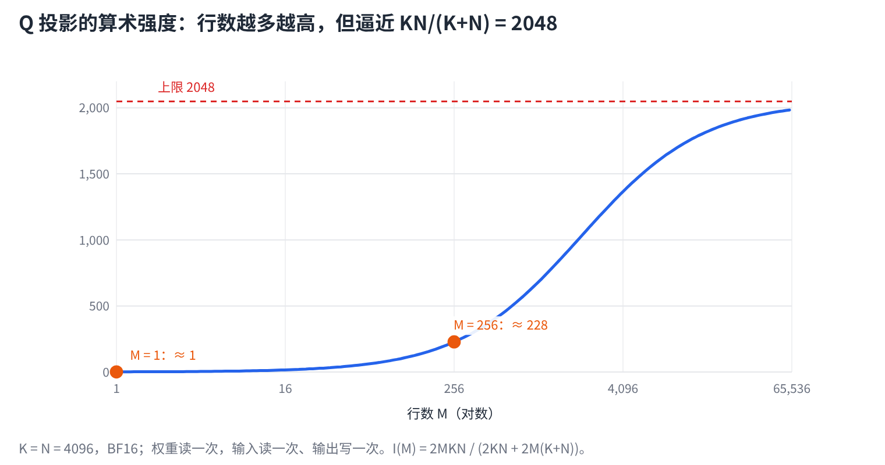
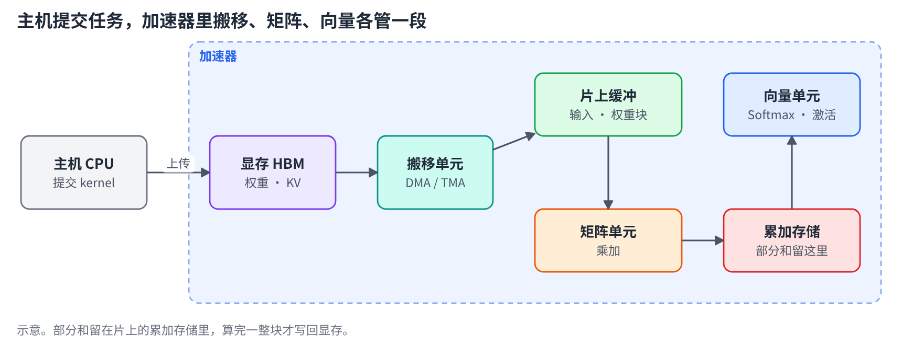
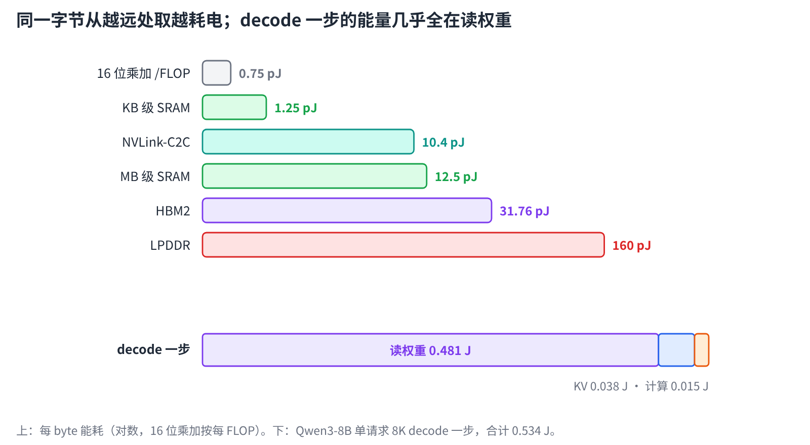
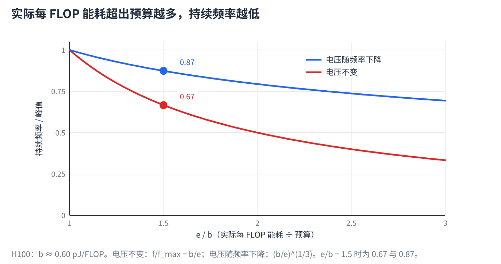
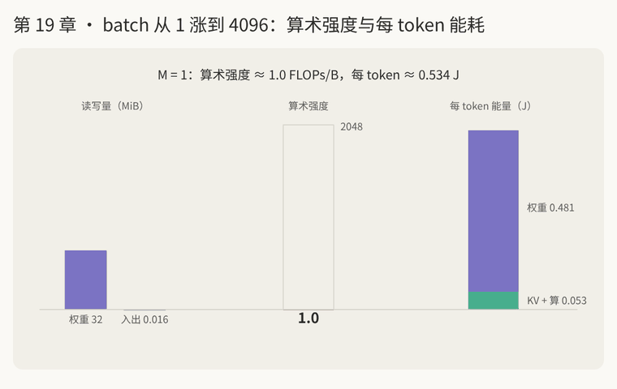

第 19 章 · 从矩阵乘法认识加速器：算多少、搬多少、耗多少电
本地运行
git clone https://github.com/wikieden/ai-infra-from-constraints
cd ai-infra-from-constraints/code/notebooks
pip install jupyterlab torch numpy
jupyter lab ch19_accelerator_basics.ipynb也可以下载后直接用 VS Code 打开 .ipynb 运行。需要 GPU 的章节在 Colab 里选「代码执行程序 → 更改运行时类型 → GPU」。
本章回答：一次 Q 投影要算多少、读写多少？batch 越大为什么越"划算"，又为什么有上限？加速器里矩阵单元、缓存、搬移引擎各管什么？芯片面积、功耗和封装怎么限制设计？为什么说单请求 decode 的能量几乎全花在搬移上？
讲解日期：2026-11-24 · 上一章：第 18 章 Scaling law 与全生命周期成本 · 下一章：第 20 章 计算单元
对应原文：materials/ai-infra-book/manuscripts/04-加速器架构.md章首 L1–L11、§4.1 L13–L222（图 4-1 到 4-7）
本章缩写：DRAM = Dynamic Random-Access Memory（动态 / 随机访问 / 存储器）· HBM = High Bandwidth Memory（高 / 带宽 / 内存）· LPDDR = Low-Power DDR（低功耗 / 双倍数据速率内存）· MTE = Memory Transfer Engine（存储 / 搬移 / 引擎，昇腾）· SM = Streaming Multiprocessor（流式 / 多处理器）· SRAM = Static RAM（静态 / 随机访问存储器）· TDP = Thermal Design Power（热 / 设计 / 功耗）· TPU = Tensor Processing Unit（张量 / 处理 / 单元）· TSV = Through-Silicon Via（硅 / 通孔）· UB = Unified Buffer（统一 / 缓冲）。全部缩写见 缩写与术语表
第 2、3 部分算的是"要做多少工作"。第 4 部分看硬件怎么把这些工作做出来。每个部件都要回答三个问题（原文 L11）：数据离计算单元多远，能复用多少次，下一步何时可以读。
讲解
第一步：一次 Q 投影：算多少、读写多少、算术强度（2026-11-24）
类比：一位老师批改作业。 标准答案（权重）只有一份，每多一个学生（一行输入）就多批一份，但标准答案不用多印。学生越多，每份标准答案"摊到每个学生头上"的成本越低；可每个学生自己的作业本（输入和输出）还得一本本收发。
公式（原文 L22–L39）：Qwen3-8B 的 Q 投影 \(Y = XW_Q\)，\(X\) 是 \(M \times 4096\)，\(W_Q\) 是 \(4096 \times 4096\)，BF16：
- \(M\)：本次处理的 token 行数（prefill 是 \(BP\)，decode 是 \(B\)）；\(K = N = 4096\)。
- \(V\) 的第一项是固定的 32 MiB 权重，第二项随行数增长（输入和输出）。
- 算术强度 \(I = F/V\)：每读写一个字节做几次运算（第 05 章）。
例子（原文 L41–L47）：
| 一次 Q 投影 | \(M = 1\) | \(M = 256\) |
|---|---|---|
| 运算 | 约 33.6 MFLOPs | 约 8.59 GFLOPs |
| 权重读取 | 32 MiB | 32 MiB |
| 输入 + 输出 | 16 KiB | 4 MiB |
| 总访问 | 约 32 MiB | 36 MiB |
| 算术强度 | 约 1 FLOP/byte | 约 228 FLOPs/byte |
行数 ×256，运算 ×256，访问只多约 1/8。
极限（原文 L60–L63）：分子分母同除以 \(M\)，
batch 越大，每行分摊的权重越少，但每行自己的输入输出还得读写，所以收益递减。

图 19-1 · 横轴是行数 \(M\)（对数），纵轴是算术强度。前段几乎和 \(M\) 成正比，后段逼近 2048。
一句话：一个投影的运算随行数线性增长，权重读取不变；算术强度随 batch 上升，但被每行的输入输出封顶在 \(KN/(K + N)\)。
第二步：加速器的组成：谁算、谁搬、谁管同步（2026-11-24）
类比：一家工厂。 办公室（主机 CPU）下订单；仓库（片外内存）存原料；车间门口的暂存区（共享缓存）放最近用过的料；工位旁的料架（局部缓冲）放手头这批；机床（矩阵单元）加工；质检台（向量单元）做后处理；叉车（搬移引擎）在各处之间运料。
原文 L69–L75：主机准备输入、提交算子和参数；设备执行。一次矩阵乘法：片外内存 → 共享缓存 → 局部缓冲 → 矩阵单元沿 K 维反复乘加，部分和留在片上 → 交给向量单元或写回。

图 19-2 · 部分和留在片上，就不用反复写回内存。
两种架构怎么分工（原文 L83–L90）：
| 维度 | NVIDIA GPU | 昇腾 DaVinci |
|---|---|---|
| 矩阵计算 | SM 里的 Tensor Core，线程束协作 | Cube 算矩阵，Vector / Scalar 算逐元素、归约和控制 |
| 全局内存到片上 | L2 / L1 硬件管；高性能路径显式用 shared memory、异步拷贝或 TMA | MTE 按描述符在 Global Memory、L1 / UB、L0 之间搬，路径由算子或编译器规划 |
| 部分和 | 寄存器、shared memory 或新一代专用矩阵存储 | L0C |
| 搬移与计算重叠 | memcpy_async、TMA、barrier、pipeline |
MTE 与 Cube / Vector 通过 flag、event 交接 |
| 程序员要管的 | 普通 load 可交给缓存；高性能路径要安排 tile、布局、异步依赖 | 更早面对 L1 / UB / L0 的容量、布局和搬移阶段 |
DaVinci 上的注意力（原文 L92）：Cube 用 L0A / L0B 算 QK，在 L0C 累加 → Vector 在 UB 上做 Softmax → Cube 算 PV；MTE 在各级之间搬，Scalar 发指令、处理依赖。
补基础：GPU 的 SM、warp、shared memory 见《CUDA 从线程到 Tensor Core》第 1–5 章。
一句话：加速器用专用单元分担矩阵、向量和搬移；GPU 更多交给缓存和程序员两头管，DaVinci 更早要求软件规划片上存储。
第三步：面积有限：加速哪部分最划算（2026-11-24）
类比：一家餐厅只有这么大地方，多摆一台炒锅，就少一个备菜台。 炒锅再多，备菜跟不上也是白搭。
例子（原文 L3、L108–L112，Amdahl 定律，第 04 章）：一段计算 100 μs，矩阵 60 μs，其余 40 μs。
| 矩阵加速 | 总时间 | 加速比 |
|---|---|---|
| 1 倍 | 100 μs | 1 |
| 2 倍 | 70 μs | ≈ 1.43 |
| 4 倍 | 55 μs | ≈ 1.82 |
| 无穷 | 40 μs | 2.5（上限） |
第一次翻倍省 30 μs，第二次只省 15 μs。
TPU v1 的面积分配（原文 L114）：\(256 \times 256\) 个 8 位乘加单元、24 MiB 统一缓冲、4 MiB 累加存储；面积里数据缓冲约 37%，计算单元约 30%，控制约 2%。缓冲占的面积比计算还多：阵列要反复用输入、权重和部分和，每次都去片外取，乘加器就会一直等。
一句话：面积和功耗是共享预算；加速一部分的收益受剩下部分封顶，缓冲小了会让多加的乘加器等数据。
第四步：功耗：搬得越远越耗电（2026-11-24）
类比：用水管灌水。 每次把一根水管从空灌满要用的水（能量）和水管长度（电容）、水压（电压）的平方成正比；水管越长，灌一次越费水。
公式（原文 L125）：
- \(\alpha\)：每周期翻转的信号比例；\(C\)：要充放电的电容（先进工艺里主要是连线，越长越大）；\(V\)：电压；\(f\)：频率。
例子 1（原文 L130–L136，LogicFolding 论文的 NPU）：同样 29 TOPS，电压 0.85 V → 0.55 V，\((0.55/0.85)^2 \approx 0.42\)；频率降 63%，乘 0.37，得 0.16。但报告的总功耗比是 0.34：折叠后从 1 大 2 小核换成 4 大核，翻转的电容 \(\alpha C\) 变多了。
例子 2（原文 L138–L144，DSP）：功耗降到 0.75，面积降到 0.60，功率密度 \(0.75/0.60 = 1.25\)，反而高 25%。总功耗降了，散热压力未必减小。
每搬一个字节的能量（原文 L154–L161）：
| 层次 | 每 byte 能耗 |
|---|---|
| KB 级局部 SRAM | 1.25 pJ |
| MB 级片上 SRAM | 12.5 pJ |
| NVLink-C2C 链路 | 10.4 pJ |
| HBM2 | 31.76 pJ |
| LPDDR DRAM | 160 pJ |
| 16 位浮点乘加 | 0.75 pJ / FLOP |
单请求 decode 的能量账（原文 L165–L181）：Qwen3-8B、8K 上下文，一步读权重 15.137 GB、KV 1.208 GB，运算 19.97 GFLOPs：
| 项 | 能量 |
|---|---|
| 读权重（HBM） | ≈ 0.481 J |
| 读 KV（HBM） | ≈ 0.038 J |
| 计算 | ≈ 0.015 J |
| 合计 | 0.534 J，权重读取占 90% |

图 19-3 · 上：各级每 byte 能耗（对数）。下：Qwen3-8B 单请求 8K decode 一步的能量分账。
- 带宽只决定快慢，不改变能量：HBM 带宽翻倍，这一步时间减半，0.534 J 不变。
- 降能量只有两条路：从更近的地方取，或让同一份字节服务更多 token。batch 为 \(B\) 时每 token 能量 \(0.481/B + 0.053\) J，\(B = 32\) 时约 0.068 J；\(B > 32\) 后每 token 的权重搬移能耗才低于计算能耗。
一句话：搬移的能耗和距离成正比；单请求 decode 的能量 90% 花在读权重上，数据复用首先是能耗问题。
第五步：光罩、HBM 堆与功率封顶（2026-11-24）
类比：一块地皮能盖多大的楼有上限（光罩）；楼周围能接几条水管（HBM 堆）看楼的周长；整栋楼的总电闸（TDP）限制同时开几台机器。
光罩上限（原文 L183）：单颗 die 不能超过一次曝光的范围；H100 die 814 mm²，A100 826 mm²，都贴近上限。Blackwell 用两颗光罩上限的 die，经 10 TB/s 的 NV-HBI 连成一颗芯片。
HBM 堆（原文 L187–L199）：每堆 1024 根数据引脚，
| GPU | 容量 | 带宽 | 堆数 × 每堆 | 引脚速率 |
|---|---|---|---|---|
| H100 SXM5 | 80 GB | 3,350 GB/s | 5 × 16 GB，每堆 670 GB/s | 5.24 Gbit/s |
| H200 SXM | 141 GB | 4,800 GB/s | 6 × 24 GB | 6.25 Gbit/s（推算） |
| B200（HGX） | 180 GB | 8,000 GB/s | 8 × 24 GB | 7.81 Gbit/s（推算） |
H100：\(5 \times 1024 \times 5.24 / 8 \approx 3350\) GB/s。
功率封顶（原文 L207–L215）：H100 TDP 700 W。HBM 满带宽约 \(3.35\ \text{TB/s} \times 31.76\ \text{pJ/byte} \approx 106\) W，留给计算 594 W，峰值速率下每 FLOP 的能量预算
实际每 FLOP 能耗 \(e > b\) 时，功率控制器降频：电压不变时持续频率是峰值的 \(b/e\)；电压随频率下降时是 \((b/e)^{1/3}\)。\(e/b = 1.5\) 时分别 0.67 和 0.87。

图 19-4 · 两条曲线：电压不变（\(b/e\)）和电压随频率下降（\((b/e)^{1/3}\)）。功率封顶时，衡量利用率应该用持续算力做分母。
场景代码：nvidia-smi 能直接看到功率上限和当前时钟，判断是否在降频（真实命令）：
nvidia-smi --query-gpu=name,power.draw,power.limit,clocks.sm,clocks.max.sm,clocks_throttle_reasons.active --format=csv
# power.draw 接近 power.limit 且 clocks.sm 低于 clocks.max.sm：正在因功率封顶降频
一句话：一颗 die 的大小受光罩限制，带宽和容量看接几堆 HBM，持续算力还要受 TDP 封顶。
动画演示：batch 从 1 涨到 4096：算术强度与每 token 能耗

可交互版：animations/19-accelerator-basics.html（滑块：行数 \(M\)，1–4096，对数）。
怎么看：
- 左边：Q 投影的权重（32 MiB，固定）和输入输出（随 \(M\) 增长）两段读写量（第一步）；
- 中间：算术强度 \(I(M)\)，逐渐逼近 2048；
- 右边：decode 一步每 token 的能量 \(0.481/M + 0.053\) J（第四步借用 Qwen3-8B 的账），\(M\) 超过 32 后权重搬移能耗低于计算能耗；
- 播放时 \(M\) = 1 → 8 → 32 → 256 → 4096。
练习与作答记录
题 1（第一步）：Qwen3-8B 的 Q 投影，\(M = 24\)。运算量、总访问量、算术强度各是多少？如果 \(K = N = 8192\)，算术强度的上限是多少？
作答记录：（待作答）
题 2（第四步）：沿用正文的 decode 能量账，batch 为 12 时每 token 能量是多少？如果权重改成每参数 1 字节（读取减半），batch 1 时一步多少焦耳？
作答记录：（待作答）
题 3（第五步）：一种 HBM 每堆 12 层、每层 3 GB，引脚速率 9.2 Gbit/s。每堆容量和带宽各多少？接 6 堆呢？如果实际每 FLOP 能耗是预算的 1.2 倍，电压不变和电压同步下降两种情况下持续频率各是峰值的多少？
作答记录：（待作答）
原书"思考"（L118：矩阵从 2 倍提到 4 倍 vs 其余工作从 40 μs 降到 25 μs）。想多练可以做。
口诀
标准答案一份，学生越多摊得越薄，作业本还得一本本收；
工厂里下单、仓库、料架、机床、质检、叉车，各管一段；
炒锅多了备菜跟不上，缓冲比计算还占地；
水管越长灌水越费，decode 的电九成花在搬权重；
地皮有上限，水管看周长，总电闸限开机。
本章复习卡片
I69（Q 投影的运算、访问与算术强度上限）、I70（加速器各部件分工，GPU vs DaVinci）、I71（面积取舍与 TPU v1 的缓冲面积）、I72（搬移能耗与 decode 能量账）、I73（HBM 堆与功率封顶）。练习做完后，按答错、卡住的地方再补。
附录 · 延伸阅读
留给以后深入学习用，不影响本章主线。★ 是建议先读的。
推荐阅读
| 读什么 | 读哪里 | 读它为了什么 |
|---|---|---|
| ★ AII 第 4 章 | 章首 L1–L11、§4.1 L13–L222 | 本章原文，图 4-1 到 4-7 |
| ★ Horowitz, Computing's Energy Problem（ISSCC 2014） | 能耗表 | 每字节、每次运算的能量从哪来 |
| Dally, Hot Chips 2023 主题演讲 | 第 52 页前后 | 片上 SRAM 与指令开销的能量 |
| Jouppi 等, TPU v1（ISCA 2017） | 面积分配一节 | 缓冲为什么比计算占地多 |
| O'Connor 等, Fine-Grained DRAM（MICRO 2017） | HBM 能耗分解 | 3.97 pJ/bit 主要花在 DRAM 内部 |
| 《CUDA 从线程到 Tensor Core》第 5、9 章 | 内存层级、roofline | GPU 一侧的同一套概念 |
| AISPE 第 2 章 | §2.3–§2.5 | Blackwell、Tensor Core 与 SM 的工程描述 |
数学原理
- 算术强度的极限：分子分母同除以 \(M\)，\(M \to \infty\) 时只剩 \(2KN / 2(K + N)\)。
- 动态功耗：每次翻转给电容充电 \(CV^2\)，每秒翻转 \(\alpha f\) 次。
- 功率随频率：电压不变时 \(P \propto f\)；电压与频率同比下降时 \(P \propto f^3\)，所以降频比例取立方根。
公式清单
| 公式 | 意思 |
|---|---|
| \(F = 2MKN\)，\(V = 2MK + 2KN + 2MN\) | 矩阵乘法的运算与访问（BF16） |
| \(I(M) = 2KN / (2KN/M + 2(K + N))\)，上限 \(KN/(K+N)\) | 算术强度 |
| \(P_{\mathrm{dyn}} \approx \alpha C V^2 f\) | 动态功耗 |
| 每 token 能量 \(= E_W / B + E_{\mathrm{KV}} + E_{\mathrm{compute}}\) | batch 摊薄权重搬移 |
| \(R_{\mathrm{stack}} = 1024r/8\) | 每堆 HBM 带宽 |
| \(b = (\mathrm{TDP} - P_{\mathrm{mem}}) / F_{\mathrm{peak}}\)；持续频率 \(b/e\) 或 \((b/e)^{1/3}\) | 功率封顶 |
代码对照：把本章的数字用代码算一遍
纯 Python，不需要 GPU。代码在仓库本地
ai-infra/solutions/chapter-code/ch19_accelerator_basics.py，配套测试tests/test_ch19.py：
bash cd ai-infra/solutions/chapter-code uv run python ch19_accelerator_basics.py # 一步一步打印 uv run pytest tests/test_ch19.py
讲义 ↔ 代码：
| 讲义 | 公式 | 写法 | 跑出来 |
|---|---|---|---|
| 第一步 Q 投影 | \(F\)、\(V\)、\(I\) | proj_cost(1)、proj_cost(256) |
约 1、约 228 FLOPs/byte；上限 2048 |
| 第三步 Amdahl | 60 / 40 μs | amdahl_us(60, 40, s) |
70、55、40 μs |
| 第四步 电压与功率密度 | 平方、比值 | (0.55/0.85)**2、0.75/0.60 |
0.42、1.25 |
| 第四步 decode 能量 | 字节 × pJ | decode_energy() |
0.481 + 0.038 + 0.015 = 0.534 J |
| 第五步 HBM | \(1024r/8\) | hbm_stack_gbs(5.24) |
约 670 GB/s；5 堆约 3350 |
| 第五步 功率封顶 | \(b\)、\(b/e\) | power_budget()、sustained(1.5) |
0.60 pJ/FLOP；0.67 / 0.87 |
关键几行：
def proj_cost(M, K=4096, N=4096, b=2):
F = 2 * M * K * N # 运算
V = b * (M * K + K * N + M * N) # 输入 + 权重 + 输出，各读写一次
return F, V, F / V # 算术强度
代码里才看得到的 3 件事：
proj_cost假设权重只从片外读一次；如果分块太小，权重会被读多次，真实访问量比 \(V\) 大（第 26 章）。- 能量账里 HBM 用的是 28 nm HBM2 模型、乘加用的是 45 nm 数据，两者工艺不同，所以只用来比量级（原文 L173）。
sustained两种情况：电压不变时功率随频率线性降，所以是 \(b/e\)；电压同步降时功率是频率的三次方，才取立方根。
自己改一改（不影响练习答案）：
- 用
proj_cost扫 \(M\) = 1、4、16、64、256、1024、4096，画出 \(I(M)\)。 - 把
decode_energy的 HBM 换成 LPDDR（160 pJ/byte），看一步多少焦耳。 - 用
hbm_stack_gbs算一算 HBM3E 9.6 Gbit/s 的每堆带宽。